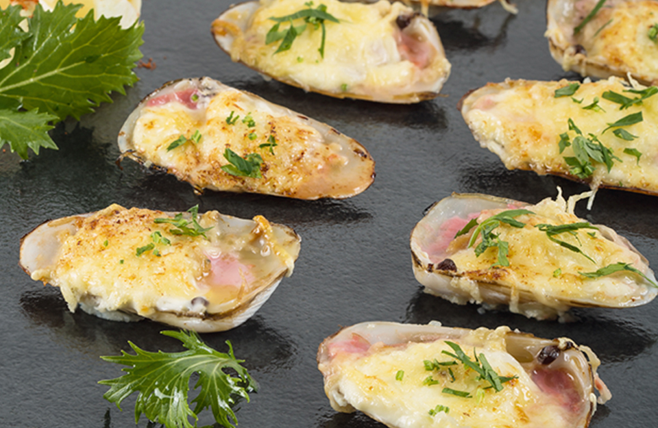

Machas a la Parmesana

Description
From Wikipedia: Machas la parmesana or "Parmesan machas" is a dish made with the macha.
This is a saltwater clam, a bivalve that is native to Chile used by ancient marine culture.
This bivalve is known scientifically as Mesodesma donacium and in English is called either the pink clam, or the surf clam.
The dish also includes Parmesan cheese.
Ingredients
- 2 kg or 40 units of fresh clams, shelled.
- 1/2 cup of dried white wine or sherry
- 1.2 cup of unsalted butter in small pieces
- Parsley finely cut
- Salt and pepper
- Steamed potatoes to accompany the dish
Steps
- Pre-heat the oven to 230 C.
- Clean and wash the clams. Separate the clams into halves.
- Place onto a cooking tray.
- Drizzle the clams with a small amount of the wine or sherry. Season with salt and pepper. Distribute the butter on top, and sprinkle
grated cheese and chopped parsley.
- Bakes the clams for 506 minutes or until the tongues are pink.
- Serve hot with steamed potatoes.